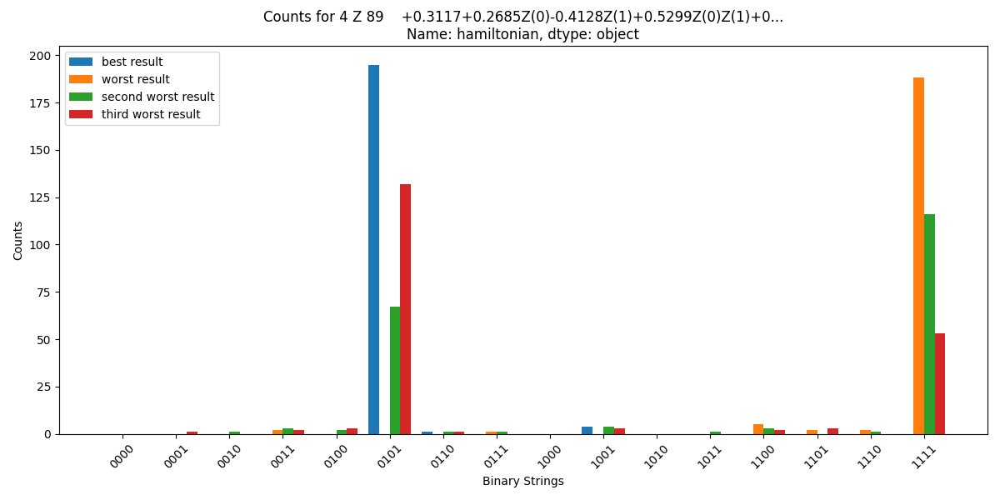
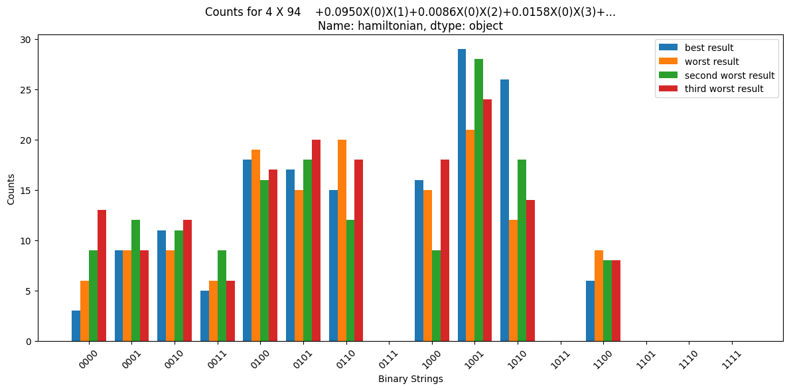
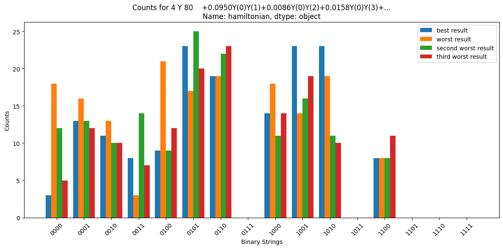

def make_hcb_grouping(H):
H1 = tq.QubitHamiltonian()
H2 = tq.QubitHamiltonian()
H3 = tq.QubitHamiltonian()
# z group is already in the right basis
U1 = tq.QCircuit()
# we can diagonalize X like this: H X H = Z
U2 = tq.gates.H([i for i in H.qubits])
# we can diagonalize Y like this: Rx(pi/2) Y Rx(-pi/2) = Z
U3 = tq.gates.Rx(angle=-np.pi/2, target=[i for i in H.qubits])
for p in H.paulistrings:
q = p.naked().qubits
# hcb z group
if p.is_all_z():
H1 += tq.QubitHamiltonian().from_paulistrings(p)
else:
# hcb x group
if (p.naked()[q[0]] == "X"):
for k, v in p.items():
p._data[k] = "Z"
H2 += tq.QubitHamiltonian().from_paulistrings(p)
# hcb y group
else:
for k, v in p.items():
p._data[k] = "Z"
H3 += tq.QubitHamiltonian().from_paulistrings(p)
hamiltonians = [H1, H2, H3]
circuits = [U1, U2, U3]
result = [(H, U) for H, U, G in zip(hamiltonians, circuits)]
return resultLRZ QPU Tequila Tutorial
This tutorial shows how to compute the ground state energy of a HCB Hamiltonian using the LRZ Quantum Computer with
The Munich Quantum Valley provides a Qiskit-backend, which can be used as a sampling backend for Tequila. If this backend is installed and configured with a valid API-Key, it is possible to run Tequila Quantum Circuits on the LRZ Quantum Computer.
Follow these steps:
- install the mqp qiskit provider
pip install mqp-qiskit-provider - successful installation can be checked with
import tequila as tq
tq.show_available_simulators()- initialize the MQP backend as follows:
from mqp.qiskit_provider import MQPProvider
provider = MQPProvider('API_KEY') # replace 'API_KEY' with your actual API key
[device] = provider.backends('AQT20')device should now contain the initialized MQPBackend.
- This device can be passed to the tequila simulate function:
tq.simulate(circuit, backend="mqp", device=device, samples=200)Note that the samples parameter is required, as the LRZ backend does not support statevector simulation and will throw an error if it’s omitted. The LRZ QPU currently does not support more than 200 samples in one job.
If the job was successfully submitted, it will show up on the Munich Quantum Portal, though it might take some time until it is scheduled and executed.
Local Simulation with AQT Simulator
Because of the long wait times and limited resources for jobs on the LRZ Quantum Computer, it is useful to test circuits locally before sending them to the LRZ QPU. The Qiskit AQT Provider offers a backend that represents a noiseless simulation of the AQT Hardware, which can be used for this purpose.
The AQT Backend is initialized like this:
# Select an execution backend.
# Any token (even invalid) gives access to the offline simulation backends.
provider = AQTProvider("INVALID_TOKEN")
device = provider.get_backend("offline_simulator_no_noise")Then pass device to the tq.simulate function as before.
HCB Groupings
Usually, when sampling the Expectation Value of a Hamiltonian \(H = \sum_i c_iP_i\) that consists of multiple Pauli-Strings \(P_i\) with Tequila, every Pauli-String is diagonalized into a Pauli-Z-String with a basis changing unitary operation. This is necessary because measurements on the QPU are done by reading out the qubits, which means that we are measuring in the Z-basis.
This means that the number of Jobs that is submitted to the backend is equal to the number of Pauli-Strings in the Hamiltonian.
However, because of the long wait times we don’t want to sample every Pauli-String individually. By arranging the Pauli-Strings in a Hardcore-Boson-Grouping, the number of jobs can be reduced to 3.
A HCB-Grouping sorts every Pauli-String of a Hardcore Boson Hamiltonian (HCB) into an X, a Y or a Z group, depending on whether the Pauli-String contains only X, Y or Z operators (this only works for the HCB Hamiltonian where every Pauli-String can only contain one type of Pauli matrix).
The following performs the grouping for a HCB-Hamiltonian and simultaneously computes the unitary operators that are needed to diagonalize each group. (Bincoletto and Kottmann (2025))
The three HCB-Groups are then sampled by appending their diagonalizing circuits to the original circuit, before sending it to the backend.
The following steps instruct how to use the HCB grouping:
- First, create a HCB Hamiltonian for a molecule. The following is an example for creating the HCB Hamiltonian for H2:
mol = tq.Molecule(geometry="h 0.0 0.0 0.0\nh 0.0 0.0 1.0", basis_set="sto-3g", transformation="ReorderedJordanWigner")
mol = mol.use_native_orbitals()
# guess initial
guess = np.array([[1.0, 1.0], [-1.0, 1.0]])
U_HCB = mol.make_ansatz(name="HCB-SPA", edges=[(0, 1)])
opt = tq.chemistry.optimize_orbitals(mol, circuit=U_HCB, initial_guess=guess.T,silent=True, use_hcb=True)
H_HCB = opt.molecule.make_hardcore_boson_hamiltonian() # name="HCB-SPA"
mol = mol.use_native_orbitals()
# guess initial
guess = np.array([[1.0, 1.0], [-1.0, 1.0]])
U_HCB = mol.make_ansatz(name="HCB-SPA", edges=[(0, 1)])
opt = tq.chemistry.optimize_orbitals(mol, circuit=U_HCB, initial_guess=guess.T,silent=True, use_hcb=True)
H_HCB = opt.molecule.make_hardcore_boson_hamiltonian() # name="HCB-SPA"- Then make the HCB grouping:
## make the groupings
hcbs_groups = make_hcb_grouping(H_HCB)- Finally calculate the expectation value for each group and add the resulting energies:
E = tq.ExpectationValue(H=H_HCB, U=U_HCB, optimize_measurements=False)
result = tq.minimize(E, silent=True)
exact_energy = result.energy
v = result.variables
groups = ["Z", "X", "Y"]
result = 0
total_exact_energy = 0
for j, (H, U) in enumerate(hcbs_groups):
Ehcb = tq.ExpectationValue(H=H, U=U_HCB + U)
result_sampl_g = tq.simulate(Ehcb, variables=v, backend=backend, device=device, samples=200)
`
exact_result = tq.minimize(Ehcb, silent=True)
exact_energy = exact_result.energy
result += result_sampl_g
total_exact_energy += exact_energyThe above code will send only three jobs to the backend.
Symmetry-Based Error Correction
The following image shows a histogram of counts for the Z-HCB group of the H4 HCB-Hamiltonian. The different counts for the ground state calculation that was closest to the exact energy and the counts for the energy that were the most inaccurate are shown.

The Z-Group was the most error-prone. Here, the bitstring that appears most often in the best result was sampled not even once in the worst result. For comparision, here are the histrograms for the X and Y groups:
 
Luckily, the Z-Group is initially already in the Z-basis, and this allows us to apply a symmetry-based error mitigation. The number of 1s that can appear in a single bitstring must be equal to \(\frac{a}{2}\) where \(a\) is the number of orbitals or qubits, which for the HCB-Hamiltonian of a hydrogen chain is the number of hydrogen atoms. We derive this number from the fact that in the HCB-Hamiltonian we are “spin-pairing the electrons into Bosonic quasi-particles” (Santos and Kottmann (2024)) which means that measuring a 1 in a qubit actually represents \(2\) electrons, so a bitstring with not exactly \(\frac{a}{2}\) 1s is physically impossible - the number of electrons in the system would not match up anymore.
If a bitstring contains more 1s, we know there must have been a severe error in the computation and we discard this sample. The following code applies this error mitigation to a dictionary of counts and recalculates the ground state energy. (Kottmann et al. (2020))
import tequila as tq
from typing import Dict,Union
def count_ones(binstring: str) -> int:
sum_ones = 0
for char in binstring:
if char not in '01':
raise ValueError(f"Invalid character '{char}' in binary string '{binstring}'")
if char == '1':
sum_ones += 1
return sum_ones
# only fixes the string if there are too many 1s, not if there are too few
def correct_data(number_hs, counts : Dict) -> Dict:
max_ones = number_hs // 2
for key, val in counts.items():
if count_ones(key) > max_ones:
counts[key] = 0
return counts
# method copied from tequilas sample_all_z_hamiltonian
def recalculate_energy(hamiltonian, counts: Dict):
# all qubits in the hamiltonian are also in the circuit
abstract_qubits_H = hamiltonian.qubits
assert len(abstract_qubits_H) != 0
# assert that the Hamiltonian was mapped before
read_out_map = {q: i for i, q in enumerate(abstract_qubits_H)}
bitstring_counts = {}
for k, v in counts.items():
bitstring_key = tq.BitString.from_binary(k[::-1])
bitstring_counts[bitstring_key] = v
# compute energy
E = 0.0
for paulistring in hamiltonian.paulistrings:
n_samples = 0
Etmp = 0.0
if paulistring._data.keys() == 0:
Etmp += paulistring.coeff
E += Etmp
continue
for key, count in bitstring_counts.items():
# gives us the qubits the paulistring matrices are on
mapped_ps_support = [read_out_map[i] for i in paulistring._data.keys()]
# count all measurements that resulted in |1> for those qubits
parity = [k for i, k in enumerate(key.array) if i in mapped_ps_support].count(1)
# evaluate the PauliString
sign = (-1) ** parity
Etmp += sign * count
n_samples += count
E += (Etmp / n_samples) * paulistring.coeff
return E
# hamiltonian string needs to be all z
def correct_energy(number_hs:int, hamiltonian:str, counts:Dict)-> float:
hamiltonian = tq.QubitHamiltonian.from_string(hamiltonian)
corrected_counts = correct_data(number_hs, counts)
corrected_energy = recalculate_energy(hamiltonian, corrected_counts)
return corrected_energy
if __name__ == "__main__":
# example usage
counts = {'01': 190, '00': 1, '10': 5, '11': 4}
hamiltonian = "-0.0077+0.2743Z(0)-0.2607Z(1)+0.5233Z(0)Z(1)"
corrected_energy = correct_energy(2, hamiltonian, counts)
print(f"Corrected energy: {corrected_energy}")References
Bincoletto, Davide, and Jakob S. Kottmann. 2025. “State Specific Measurement Protocols for the Variational Quantum Eigensolver.” https://arxiv.org/abs/2504.03019.
Kottmann, Jakob S., Sumner Alperin-Lea, Teresa Tamayo-Mendoza, Alba Cervera-Lierta, Cyrille Lavigne, Yen Tzu-Ching, Vladislav Verteletsky, et al. 2020. “Tequila: A platform for rapid development of quantum algorithms.” https://github.com/tequilahub/tequila.
Santos, Francisco Javier Del Arco, and Jakob S. Kottmann. 2024. “A Hybrid Qubit Encoding: Splitting Fock Space into Fermionic and Bosonic Subspaces.” https://arxiv.org/abs/2411.14096.